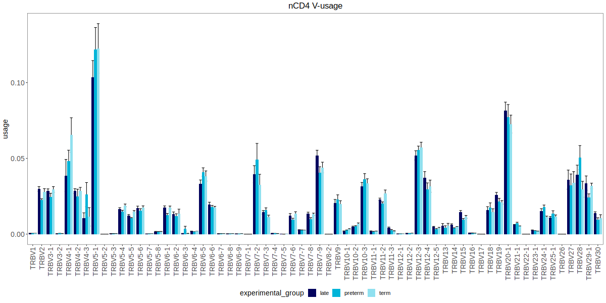

Usage: calculating basic stats for a clonoset
Stats module allows to calculate various stats for all clonosets and for individual clonosets.
from repseq import clonosets as cl
from repseq import stats
from repseq import clone_filter as clf
# This function shows clonosets properties in a convenient way.If `remove_non_target` is set to True, contaminant chains will be removed
from clonosets based on their percentage. The threshold is set with non_target_threshold, the default value is 0.01.
# To read a single dataset, use read_clonoset function from io module
clonosets = cl.find_all_exported_clonosets(output_dir, remove_non_target=True, non_target_threshold=0.01).sort_values(by="sample_id").reset_index(drop=True)
# Calculate stats for clonotypes, including number of functional clones, non-singletons (clonotypes with more than one UMI count/read), their read and UMI counts.
clonoset_stats = stats.calc_clonoset_stats(clonosets)
# Calculate CDR3 properties. In this example, only functional clonotypes (=no frameshifts or stops) are used
func_filter = clf.Filter(functionality="f", by_umi=True)
cdr3_properties = stats.calc_cdr3_properties(clonosets, cl_filter=func_filter)
# Calculate diversity stats. It includes observed diversity, Shannon-Wiener and normalized Shannon-Wiener index for each clonoset in clonosets_df. Here, a top_n filter is applied.
top_filter = clf.Filter(functionality="f", top=4000, by_umi=True, mix_tails=True, seed=100)
diversity_stats = stats.calc_diversity_stats(clonosets, cl_filter=downsample_filter, seed=123)
# Calculate convergence (=the number of unique CDR3 nucleotide sequences that code for the same amino acid sequence) for each clonoset in clonosets_df.
downsample_filter = clf.Filter(functionality="f", downsample=15000, by_umi=True, seed=100)
convergence = stats.calc_convergence(clonosets, cl_filter=top_filter)
# Also, segment usage can be calculated for V/J/C-segments. All possible options are ["v", "j", "c", "vj", "vlen", "vjlen"].
# "vlen" and "vjlen" options only take the length of a j- or c-segments into account, respectively.
v_usage = stats.calc_segment_usage(clonosets, segment="v", cl_filter=func_filter, table="long")
Convergence visualization
Calculated stats can be visualized in Jupyter notebook using %%R cell magic.
%%R -i convergence,metadata -w 400 -h 300
params_order <- c("convergence")
convergence %>%
merge(metadata) %>%
select(sample_id, experimental_group, subset, convergence) %>%
pivot_longer(-c(sample_id, experimental_group, subset), names_to="parameter", values_to="value") %>%
mutate(experimental_group=factor(experimental_group, group_order)) %>%
mutate(parameter=factor(parameter, params_order)) %>%
ggplot(aes(x=experimental_group, y=value, color=experimental_group)) +
geom_boxplot(outlier.shape=NA)+
geom_jitter()+
facet_wrap(vars(parameter), scales="free_y")+
scale_color_manual(values=colors_6_groups) +
boxplot_theme+
theme(legend.position="none")
Diversity visualization
Calculated stats can be visualized in Jupyter notebook using %%R cell magic.
%%R -i diversity_stats,metadata -w 900 -h 300
params_order <- c("diversity", "norm_shannon_wiener", "chao1")
diversity_stats %>%
merge(metadata) %>%
select(sample_id, experimental_group, subset, diversity, norm_shannon_wiener, chao1) %>%
pivot_longer(-c(sample_id, experimental_group, subset), names_to="parameter", values_to="value") %>%
mutate(experimental_group=factor(experimental_group, group_order)) %>%
mutate(parameter=factor(parameter, params_order)) %>%
ggplot(aes(x=experimental_group, y=value, color=experimental_group)) +
geom_boxplot(outlier.shape=NA)+
geom_jitter()+
facet_wrap(vars(parameter), scales="free_y")+
scale_color_manual(values=colors_6_groups) +
boxplot_theme+
theme(legend.position="none")
CDR3 properties visualization
Calculated stats can be visualized in Jupyter notebook using %%R cell magic.
%%R -i cdr3_properties,metadata -w 900 -h 500
params_order <- c("mean_cdr3nt_len", "mean_insert_size", "zero_insert_freq", "cdr3_5_charge", "cdr3_5_kf4")
cdr3_properties %>%
merge(metadata) %>%
select(sample_id, experimental_group, subset, mean_cdr3nt_len, mean_insert_size, zero_insert_freq, cdr3_5_charge, cdr3_5_kf4) %>%
pivot_longer(-c(sample_id, experimental_group, subset), names_to="parameter", values_to="value") %>%
mutate(experimental_group=factor(experimental_group, group_order)) %>%
mutate(parameter=factor(parameter, params_order)) %>%
ggplot(aes(x=experimental_group, y=value, color=experimental_group)) +
geom_boxplot(outlier.shape=NA)+
geom_jitter()+
facet_wrap(vars(parameter), scales="free_y")+
scale_color_manual(values=colors_6_groups) +
boxplot_theme+
theme(legend.position="none")
V-segment usage visualization
Calculated stats can be visualized in Jupyter notebook using %%R cell magic. 
```p %%R -i v_usage,metadata -w 1200 -h 600
v_usage_order <- v_usage %>% select(v) %>% distinct() %>% separate(v, into = c("f", "l"), remove = F, convert = T) %>% separate(f, into = c("s", "n"), remove = T, convert = T, sep="V") %>% arrange(n,l) %>% pull(v)
v_usage %>% merge(metadata) %>% mutate(v=factor(v, v_usage_order)) %>% ggplot(aes(x=v, y=usage, fill=experimental_group)) + stat_summary(fun.data=mean_se, geom="errorbar", position="dodge")+ stat_summary(fun=mean, geom="col", position="dodge")+ theme_bw()+ theme( text = element_text(size=14), axis.text.x = element_text(size=14,angle=90, vjust=0.5, hjust=1), axis.text.y = element_text(size=14), axis.title.x = element_blank(), plot.title = element_text(hjust = 0.5), panel.grid = element_blank(), legend.position = "bottom" )+ ggtitle("nCD4 V-usage")+ scale_fill_manual(values = colors_6_groups) ```